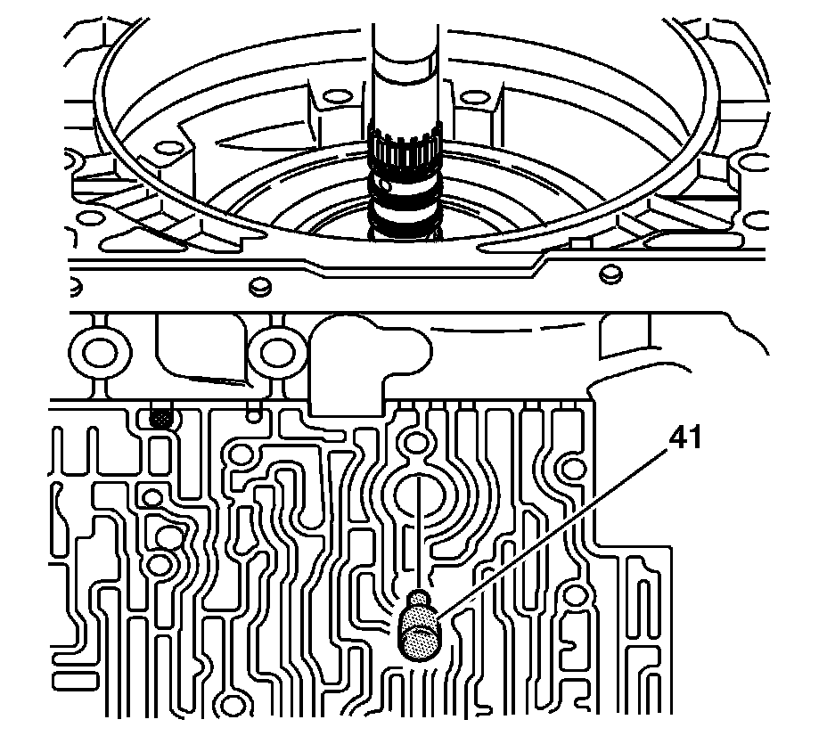
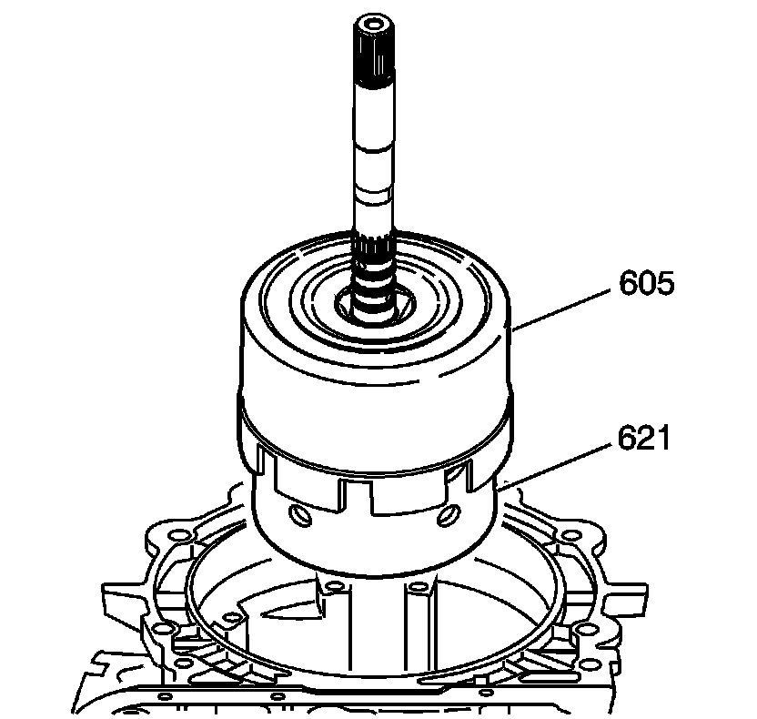
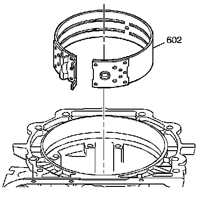

2-4 Band, Input Clutches, Input Gear Set Removal
2-4 Band, Input Clutches, Input Gear Set Removal

1. Remove the band anchor pin (41).

2. Remove the input housing and shaft assembly (621), along with the reverse input clutch housing and drum assembly (605).

3. Remove the 2-4 band assembly (602).